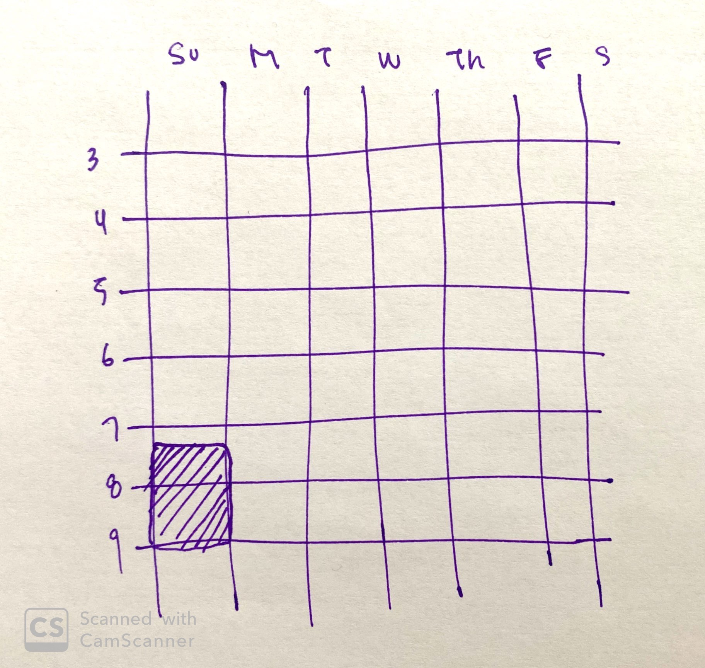
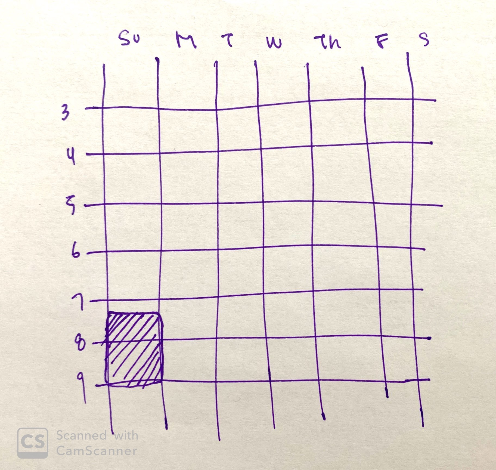
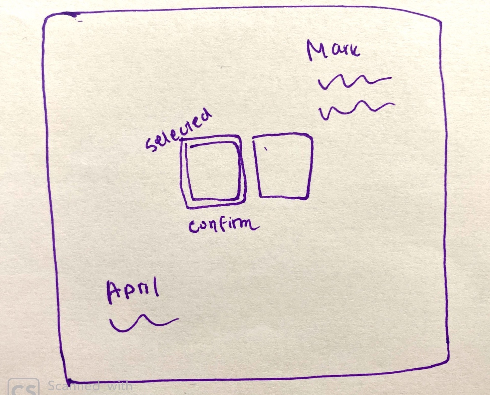
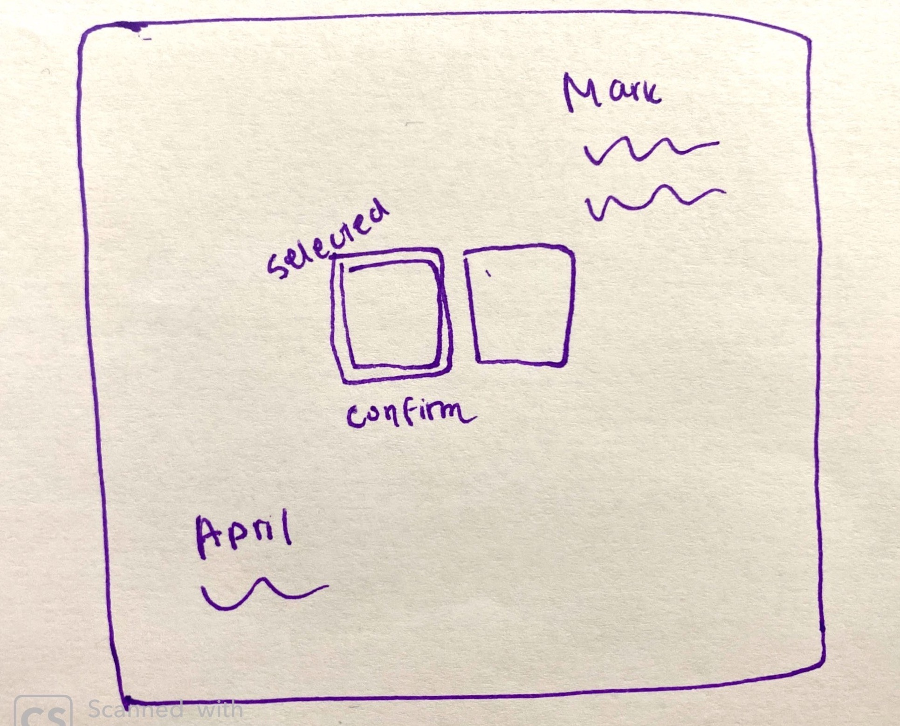
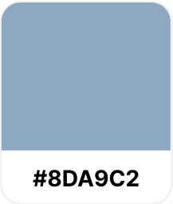
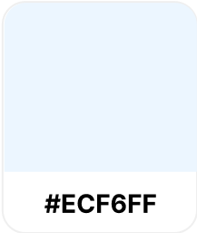
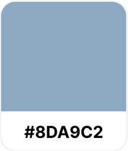
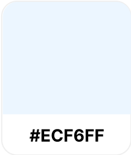

BIO
Jane's work as a psychiatrist is rewarding but tiring. Jane uses Zoom to catch up with her friends and family. She is an avid user of emojis and will also sometimes share gifs she found on Instagram.
GOALS
- She wants to show support to other people in video chats when they're sharing.
FRUSTRATIONS
- Jane feels like people are careful of not talking over one another and that people aren't able to express everything they want to in video chats.


 


 


 


